小组赛，Day3
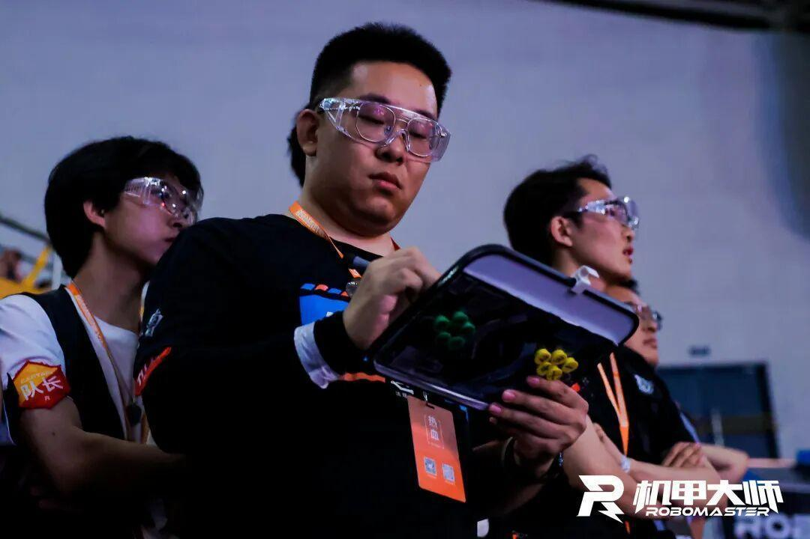
昨天的比赛结束了，我们与华北理工大学战平，今天与防灾科技学院的比赛是决定我们能否出线的关键一局。大家为此进行了全方面的准备，我们加班加点地完成了机器人检修与调试任务。开会进行了操作手战术分析等，今天的比赛强度空前激烈，碰到的对手也都十分强大，但我们没有退缩，我们相信，不畏强敌，逢敌亮剑，是Robomaster比赛的重要精神，Ambition，加油！
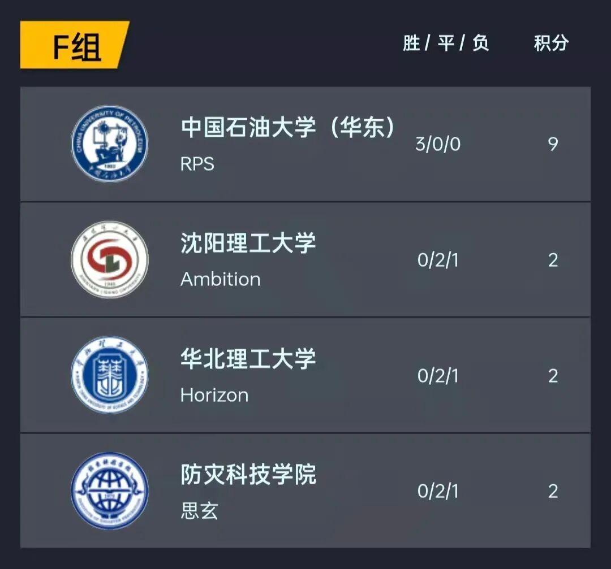
经过了两天比赛，我们离小组赛出线只差一步，今天上午与防灾科技学院的比赛将是关键的一局，我们将全力以赴，也相信大家都可以在这场比赛中发挥出自己的实力，赛出自己的最好水平。第三日上午赛程如下，我方红方对战蓝方防灾科技学院：
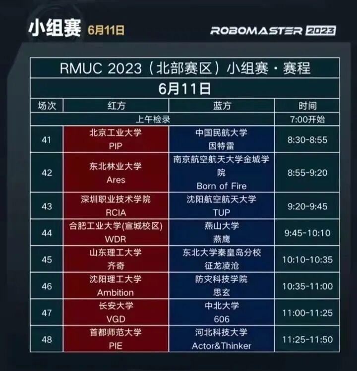
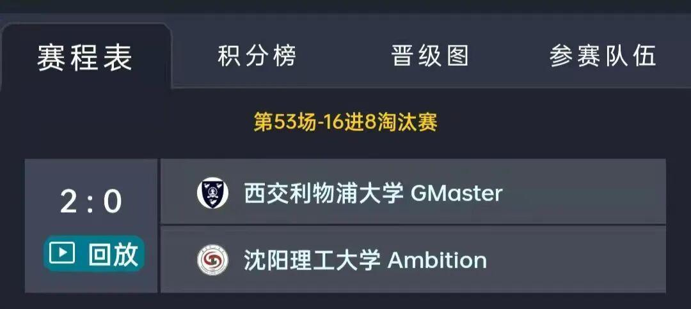
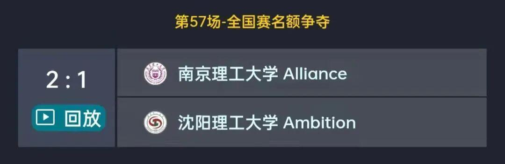
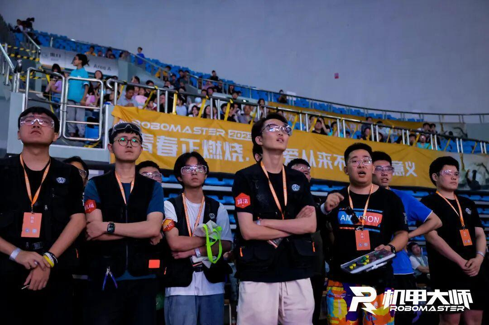
6月11日的赛程排的很满，比赛强度是我们来到赛场后遇到最大的。10：35开始了我们此次比赛的第三场，我方红方对战蓝方防灾科技学院，最终我们战平防灾科技学院，以小分优势在小组赛出线。15：30开始了我们此次比赛的第四场，我方蓝方对战红方西交利物浦大学。22：30开始了我们此次比赛的第五场，我方蓝方对战红方南京理工大学。
第三场与防灾科技学院第二小局比赛，我方4号步兵机器人在开局30秒左右以一个漂亮的飞坡进攻对方半场，利用飞坡增益先击退对方英雄机器人，之后，凭借飞坡带来的发射机构冷却及防御增益，在对方3号步兵和4号步兵的围追堵截中，反杀对方3号步兵，取得一血，拿下一个漂亮的开门红，使我方在开局占有较大优势，并干扰了对方进攻。在比赛结束前3分50秒，我方2号工程及4号步兵掩护1号英雄进攻对方前哨站，成功命中四发大弹丸，带走对方前哨站800点血量，将其前哨站压至半血以下。之后，面对蓝方3、4号步兵机器人的进攻，我方两台步兵机器人及工程机器人掩护英雄机器人逃生，并包围击杀了对方3号步兵。在比赛结束前3分钟，在我方步兵机器人和工程机器人成功封锁对方其它机器人创造的的有利条件下，我方1号英雄主动出击，用三发大弹丸将对方前哨站磨至血皮，并在之后立刻返回补弹，再次进攻，成功击毁对方前哨站。之后我方3、4号步兵交替进攻对方哨兵机器人，进攻节奏完美契合，有效地阻止了其哨兵脱战回血。在比赛结束前20秒，我方1号英雄、2号工程、4号步兵稳扎稳打，防守住了对方4台机器人发动的反攻，在最后18秒。我方4号步兵机器人更是转场进攻，再次磨掉对方哨兵血量，体现了防守与进攻的完美配合。
第四场与西交利物浦大学的比赛，第一小局我方2号工程机器人开局进入对方半场干扰其取矿。在我方工程的干扰下，对方第一块银矿石吸取失败，第二块银矿石撞到我方工程机器人的机械臂，掉落到地上，开局我方工程机器人的干扰有效地打乱了对方工程的取矿节奏，将双方经济水平拉在同一水平线上。并利用这一开局取得的优势，2号工程，3、4号步兵配合我方1号英雄机器人，在对方工程的干扰下，英雄以六发大弹丸打掉对方前哨站1200点血量。在第二小局比赛，在开局对方工程兑换五级矿成功，英雄不断吊射我方前哨站并磨掉800多点血量的不利形式下，我方积极寻找战机，在比赛结束还剩四分十五秒左右，我方3、4号步兵前压到对方前哨站下，相互配合击杀对方4号步兵机器人，并抓住机会进入对方半场围堵进攻其回防的英雄机器人。我方1号英雄机器人抓住机会，主动出击，用8发大弹丸干净利落地击毁了对方前哨站，将双方拉回同一起跑线。之后我方4号步兵机器人抓紧击杀对方英雄，有效打击了对方的进攻力量，随后抓住对方的防守空隙，利用升到三级获得的底盘功率提升buff，丝血逃生。比赛进行到五分钟，面对对方1号英雄，2号工程，3号步兵的前推进攻，我方4号步兵在对方三台机器人围攻下，丝血反杀对方1号英雄机器人，打断了对方的进攻节奏。在据比赛结束还剩十五秒，在我方1号英雄，3号步兵被对方抓住而阵亡的不利情况下，我方4号步兵主动出击，绕至对方半场，进攻其哨兵机器人，虽然最后因时间不够，以52点哨兵血量差惜败西交利物浦大学，但我方各兵种已经发挥出了自己的实力，尤其是我方4号步兵，多次起到力挽狂澜的作用，是我们心中的MVP。
第五场与南京理工大学第二小局比赛，在开局一分钟被对方飞镖命中我方前哨站，英雄配合吊射击毁我方前哨站的不利形势下。我方4号步兵选择飞坡，利用飞坡成功带来的增益，击杀对方3号步兵。在比赛进行到两分五十秒，我方4号步兵再次飞坡成功，在对方3、4号步兵围堵下，利用飞坡增益双杀对方两台步兵机器人，取得优势。在比赛进行到四分五十秒，我方2号工程机器人配合1号英雄机器人进攻对方前哨站，在对方工程机器人和步兵机器人的堵截下，稳扎稳打，用7发大弹丸打残对方前哨站，并在之后立刻回家补给，再次进攻，成功击毁对方前哨站。在比赛结束前一分钟，我方3号步兵移动至对方环形高地，利用地形优势成功磨掉了对方前哨站小半血量，英雄机器人成功吊射对方基地，干掉200点虚拟护盾，虽然最后因大弹丸数量不足没能对其基地造成更多伤害，但我方4号步兵仍稳扎稳打，不断命中对方哨兵，最后以哨兵血量优势拿下第二局，将比分扳回1：1平。第三小局，在我方2号工程机器人开局意外失去移动能力，开局一分半钟被对方飞镖命中前哨站的不利情况，我们积极防御，寻找战机。之后我方4号步兵飞坡时因对方3号步兵的干扰意外翻车，在比赛进行到四分钟，我方3号步兵绕至对方半场救援我方4号步兵机器人，可惜最后因地形因素被双双卡住。在这关键时刻，我方1号英雄机器人挺身而出，先是在对方三台机器人的堵截下顽强进攻，成功命中将对方前哨站磨至半血以下。之后更是绕至对方半场，救援我方两台步兵机器人，并在距离比赛还剩一分钟左右完成落凤坡极限救援，使我方两台步兵重新回到赛场，这一可歌可泣的救援体现了我们操作手间高于胜负的兄弟情谊。虽然最后我方英雄因被对方工程推至坑中失去移动能力，加上前期落后太多，我方处于巨大劣势，但我方剩下的两台步兵机器人仍然战斗至比赛最后一秒，这种不到最后一刻绝不放弃的意志值得我们称赞并不断保持。
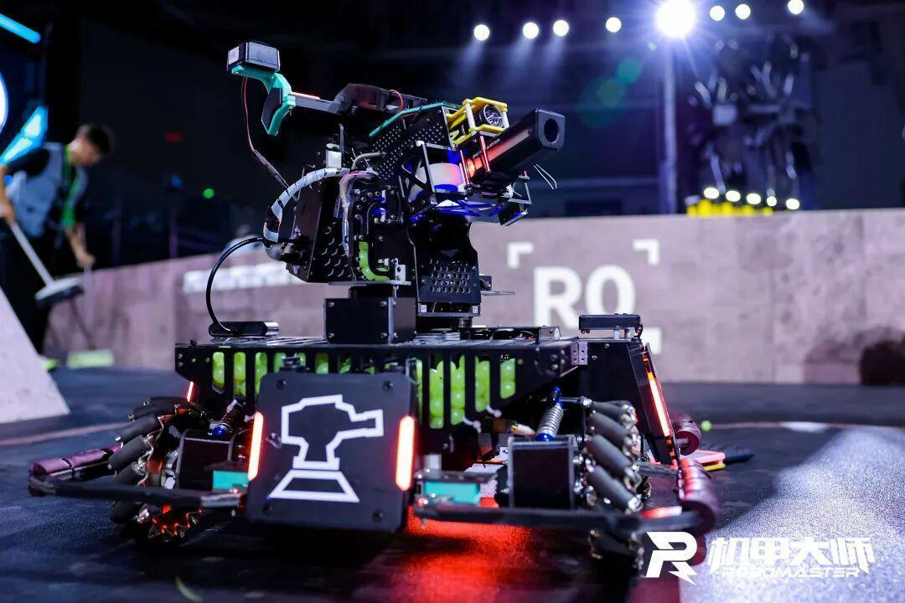
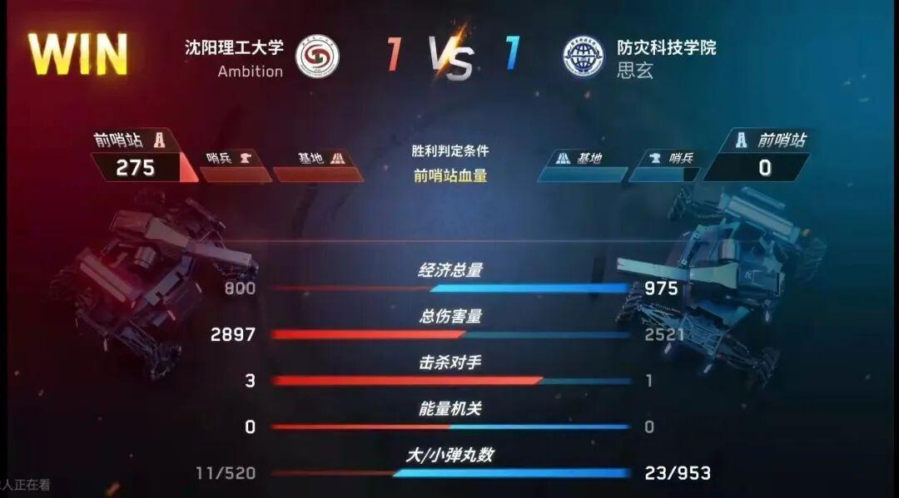

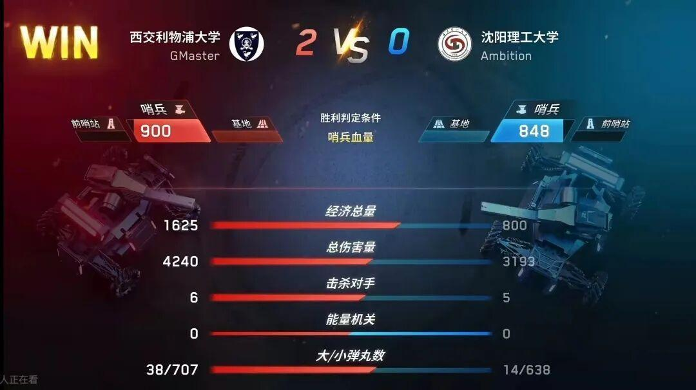

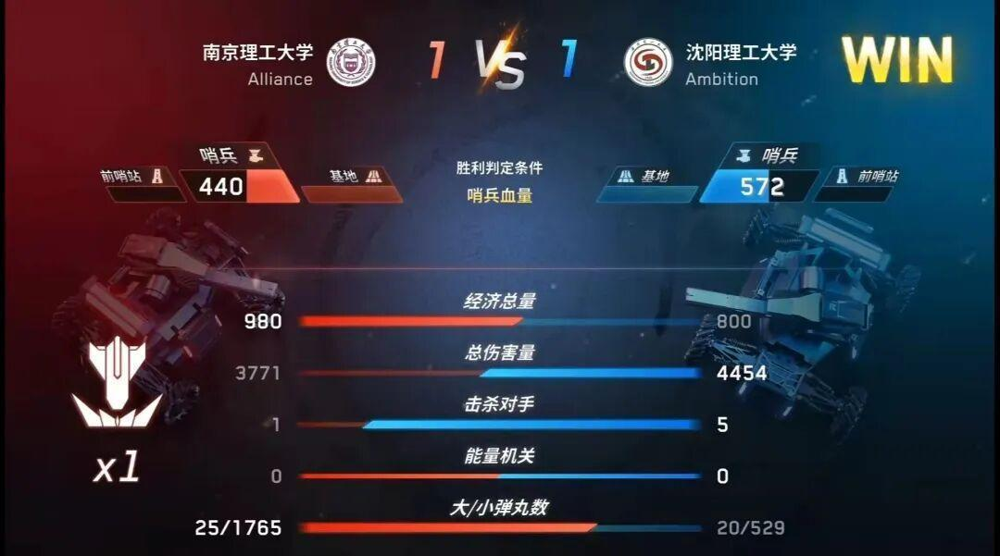
在今天的比赛中，高强度的比赛，强大的对手，因赛事意外导致的时间延迟，都给我们带来巨大挑战。赛事激烈，我们争分夺秒，查缺补漏；面对强敌，我们敢于亮剑，主动出击。在今天的三场比赛中，4号步兵机器人进攻讯猛，利用飞坡增益多次完成击杀，不断袭扰对方，积累优势。并且多次在赛局关键时间点完成击杀，换血，反杀等优秀操作，在几局比赛中起到中流砥柱的作用，是我们当之无愧的MVP，感谢4号步兵操作手航哥的精彩操作，研发代表池哥的默默付出，加油，你们是最棒的 ！
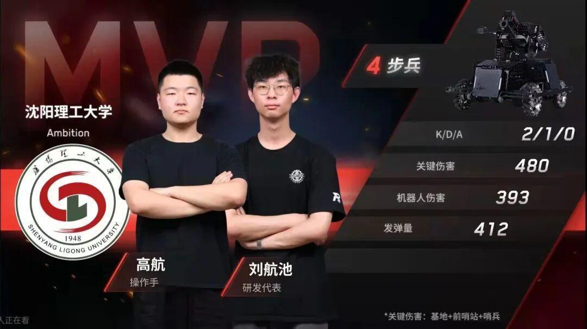
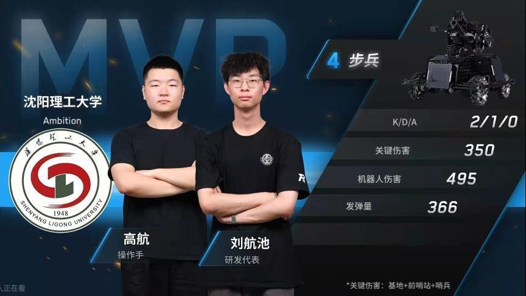
今天的比赛强度过大，因此产生了一些问题，对我们造成一些影响，例如我方对南京理工大学第三小局，工程机器人开局不能移动，两台步兵被困“落凤坡”。面对这种不利形式，我方1号英雄机器人挺身而出，主动绕至对方半场，救援我方两台步兵机器人，虽然在救援过程中遭到对方工程机器人的堵截，但我们的英雄操作手凡哥始终没有放弃。并最终在距离比赛还剩一分钟左右完成这一极限救援，使我方两台步兵回到赛场，落凤坡极限救援这一可歌可泣的行为体现了我们操作手间高于胜负的兄弟情谊，这场比赛无论胜负，他们就是最棒的。
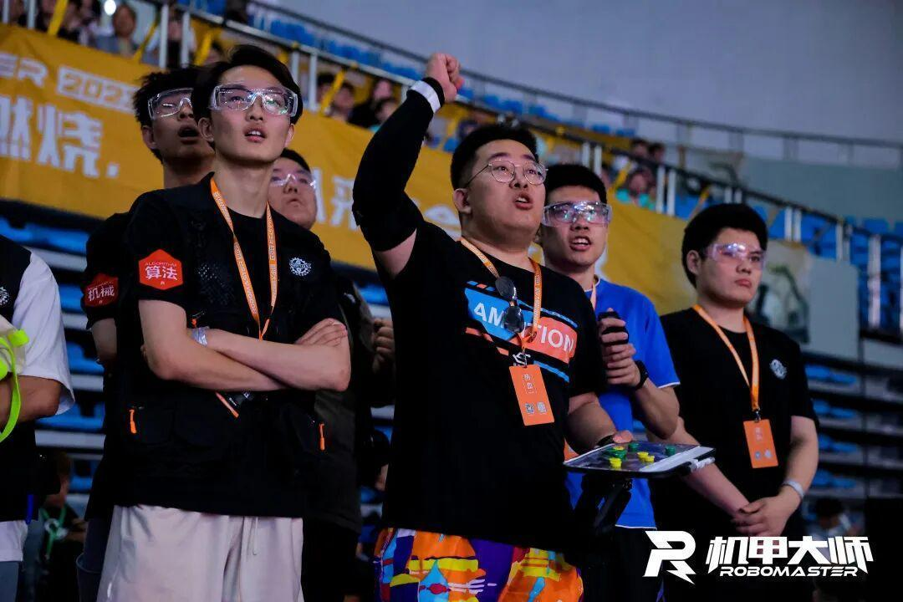
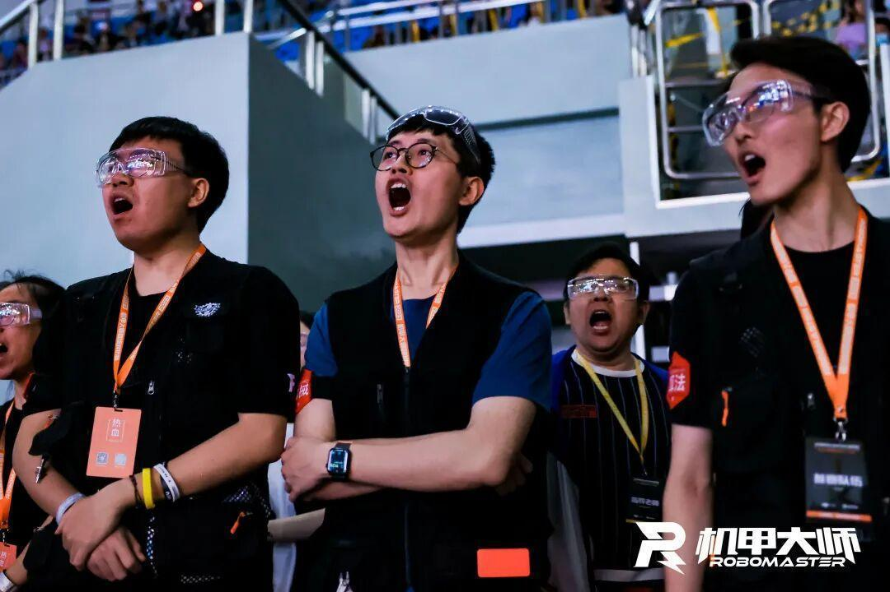
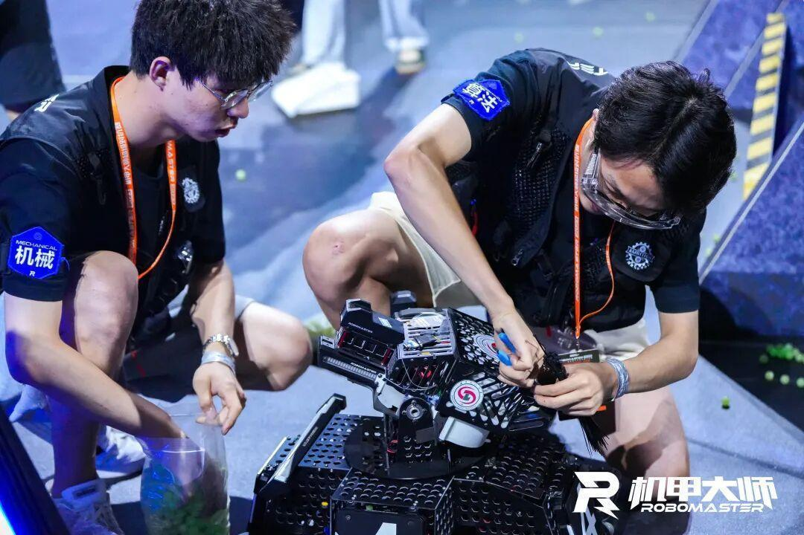
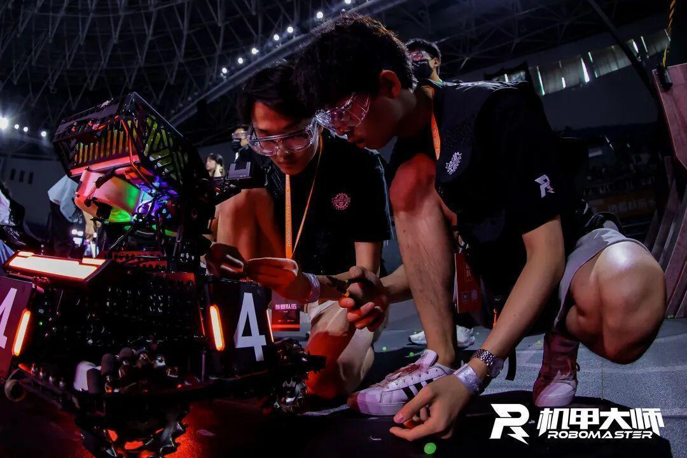
排版|李现亮
图片|大疆官方
文字|李现亮